Case 03 / Mobile app
Scrim
An app for the things you'd do, if you weren't doing them alone.
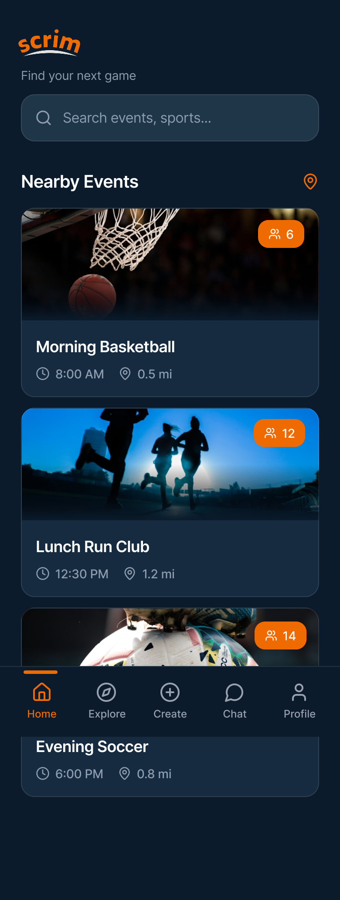
The problem
This generation moves less and connects less, and the two trends compound. The activities people would show up to with a friend are the ones they skip when they'd have to go alone.
The outcome
Scrim, a mobile app for finding nearby physical activities and the people to do them with. Built around the assumption that the hard part isn't the workout; it's the with-someone. If the meeting part is frictionless, the moving part has a chance.
Context & problem
People are moving less. Only 32% of adults 18–44 actually meet the federal guidelines for aerobic and strength activity in their free time (CDC/NHIS, 2024). They're also alone more: 79% of Gen Z reported feeling lonely in the past year, the highest of any generation (Cigna's 2020 Loneliness Index). Both trends are getting worse at once, and they meet in a specific place: 38% of 18-to-34-year-olds say not having someone to exercise with is a real obstacle, and just over half say a friend or family member joining is what actually gets them moving (AARP, 2018).
Which is to say: it's not that people don't want to be active. It's that the things they'd actually show up to are the things they'd do with someone, and the with-someone is missing.
It's a strange kind of alone: hundreds of people watching a feed, and still no one to play tennis with on Saturday. That's the gap Scrim is built for. Not the loneliness or the inactivity in isolation, but the place where they meet: where the activity that doesn't happen and the connection that doesn't happen are the same missing thing.
The three problems Scrim addresses:
- People want to be active with others but can't find them. Existing networks don't translate into actual plans.
- They don't know who to trust. Showing up to a public meet with strangers is a real friction, especially for first-time users.
- The current workarounds are fragmented. Group chats, social media, and event boards weren't built for "I want to play tennis Saturday at 10."
Who it's for. People who want to be more active and more connected, but won't show up alone. Specifically: young adults looking for social and active lifestyles; busy professionals who want flexible ways to stay active; people new to a city; casual players who aren't trying to compete, just to be there.
Constraints. Course project, team of 5, two-month timeline (late March – May 2026).
My role
Team of 5. Research was shared work across the team. From the IA onward, the design track concentrated on me: I owned the information architecture, the full UI design, and the hi-fi prototype. The screens and the interaction linking that makes it clickable are both mine. The other team members took on other parts of the project.
It's a different role shape than Asah (where I led the backend) or Health U (solo). What it shares with both: every screen the user actually touches is one I designed.
Research
The research came in three layers, and each one fed something specific into the product.
Secondary research mapped the size and shape of the problem. The Gen Z loneliness figure (79%, Cigna), the share of adults who actually meet activity guidelines (32%, CDC), and the workout-partner figures (38% call it a real obstacle, 52% say a friend joining is what gets them moving, per AARP) all pointed in the same direction: this is a behavior problem, not an information problem. People know they should be active. They just won't show up alone.
Competitor analysis clarified what the existing tools weren't doing. Meetup is broad and built for events, not personalized matching. Strava is built for tracking solo workouts, not connecting people. Playtomic does player-court matching well, but only for racket sports. On a feature grid of social matching · cross-activity · real-time · skill-level match, Meetup, Strava, and Playtomic each hit one or two. None of them hit all four. That four-corner overlap is the space Scrim sits in.
Persona development, grounded in the secondary research above, turned the numbers and the gap into three people we kept testing every design decision against:
- Calming Carmen, 20, college student, Clemson, SC. Yoga, Pilates, time outdoors. Naturally social, but can't turn casual friendships into real plans. Her concern is safety: joining activities with strangers, plans that fall through, too many options to sort. Features she'd want: verified profiles, skill-and-vibe matching, small-group recommendations over large events, easy last-minute plans.
- Striking Stuart, 30, kickboxing trainer, Whittier, CA. Trains outdoors and at gyms; can't reliably find sparring partners. Busy schedule; likes competitive but respectful company. His concern is no-shows and the time cost of organizing. Features he'd want: skill-level matching, a ratings/reputation system for reliable partners, scheduling filters, easy group-event creation.
- Tiffany Tennis, 43, recreational player, Atlanta, GA. Plays to stay active and socialize while balancing family and personal time; wants friendly, low-pressure matches. Her concern is safety and intimidation: meeting unfamiliar people, overly competitive players. Features she'd want: a trusted, verified community, group meetups and social leagues, in-app chat to coordinate.
What the three personas have in common matters more than what's different about them: every one of them named trust and effort, being safe and being low-friction, before they named the activity itself.
Goal
No usage data existed yet, so success wasn't a number to hit. It was a bar the design had to clear before anyone would trust it enough to show up.
The product's whole pitch was to make the meeting part frictionless, so that became the test: could a stranger go from "I want to play tennis Saturday" to an actual plan, with people they trust enough to show up for, in as few steps as possible? Onboarding was held to three inputs and nothing more. The IA was held to a rule that no screen could exist unless it moved the user one step closer to a plan. Trust signals had to live in the flow itself, not on a settings screen a cautious user like Carmen would never find.
[Kelly: this is my read of your implicit success bar, built from your own copy in Decisions 01-03 — confirm it's right or rewrite it. If the final critique set a more specific bar (a rubric, a professor's stated expectation), that's worth naming here instead.]
Decisions & tradeoffs
Energetic, but never scam-y. Trust at every layer.
In a meeting app, trust isn't a feature you bolt on. It's the thing the user is checking, consciously or not, every time they open the screen. That carried into two layers.
Visually: people who use a meeting app need to trust it; people who use an activity app need it to feel alive. Most defaults break one of those. Lean too bright and too colorful, and the app starts reading scam-y, and the moment a meeting app looks unserious, the people you most want using it (the cautious ones, like Carmen) close it. Go too muted and it reads inert, the opposite of what a "go be active" product is supposed to feel like. I tuned the visual system right at that line: enough color and motion to read energetic, restrained enough to read credible. That tension, warm but trustworthy, is the same line I'd designed against in Asah and Health U. Across three products in three different domains, the same rule kept mattering.
Structurally: verified profiles, post-activity ratings, in-app reporting. Trust signals built into the architecture, not parked on a settings screen. The reason is Carmen: when a 20-year-old decides whether to show up to an event with strangers, the answer needs to be visible in the flow, not assumed.
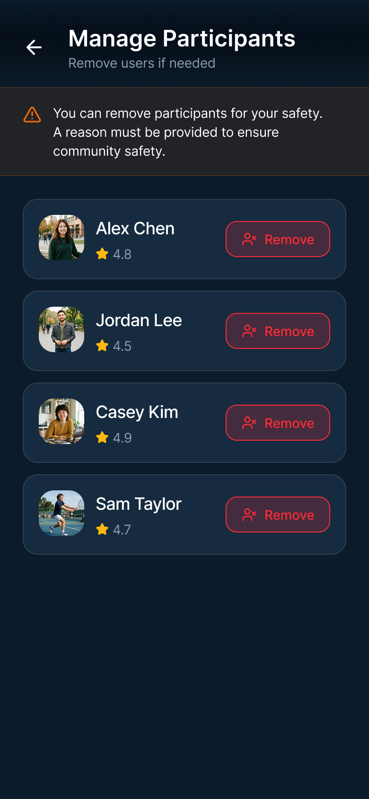
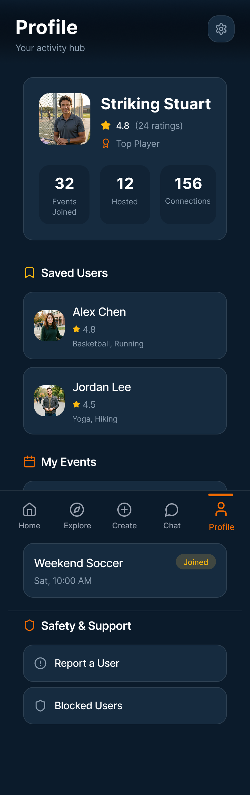
Low-effort onboarding (three inputs, then out of the way)
Onboarding is where social apps lose people. The user opens the app to do a thing, gets handed a fifteen-screen sign-up, and closes it. Scrim's whole pitch is make the meeting part frictionless, so onboarding had to be the frictionless part most.
The call: take only what's needed to power matching, and nothing more. Three inputs, interests, skill level, availability, and the user is at the dashboard. Every additional question we considered (location specifics, full profile, photos, bio) was pushed downstream, to be filled in after the user had seen the app work for them at least once.
The tradeoff: a thinner profile at first contact. The reason it's worth it: Tiffany. If the first screen feels like work, she's gone.
An IA built around intent-to-action
The full app does a lot: discover, create, join, chat, rate, report, re-book. But the trick of a social-activity product isn't having features. It's making sure the user doesn't have to think about which feature to use. They have an intent ("I want to play tennis Saturday") and they need to be on a screen that does the next thing.
So I structured the app around a four-step intent-to-action arc:
- Onboarding. Interests + skill + availability.
- Dashboard. Suggestions + nearby activities.
- Match. Join or create a session.
- Connect. Chat and confirm plans.
The architecture's whole job is to keep the user moving forward through that arc. No screen exists that doesn't move them one step further. The tradeoff: some features (filters, map view, saved activities) had to be earned into the flow rather than parked on a navigation bar. They only show up when the user is at the step where they're useful.
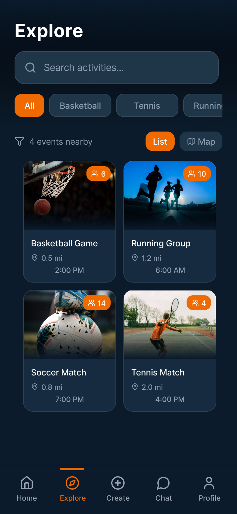
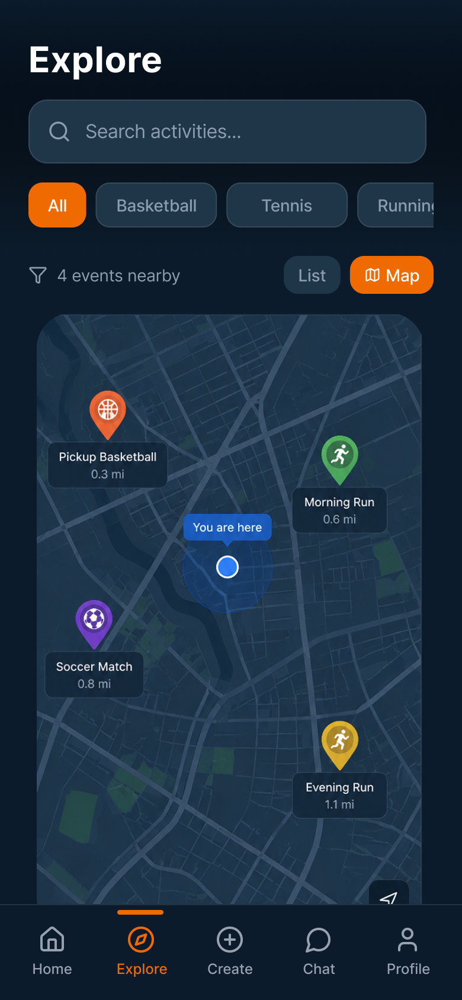
The design
5a · Process
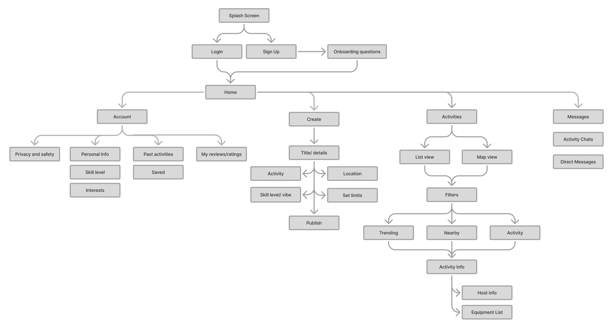
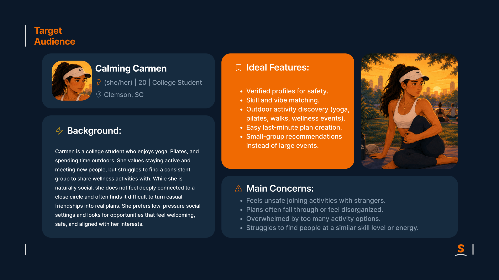
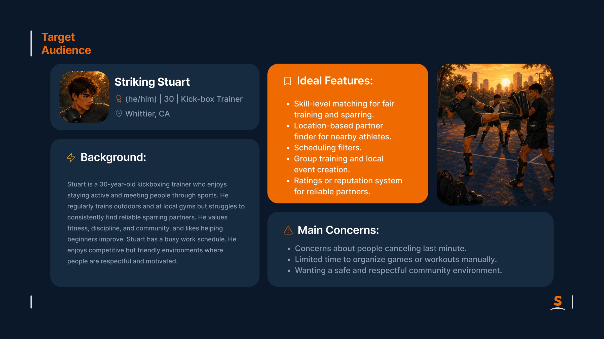
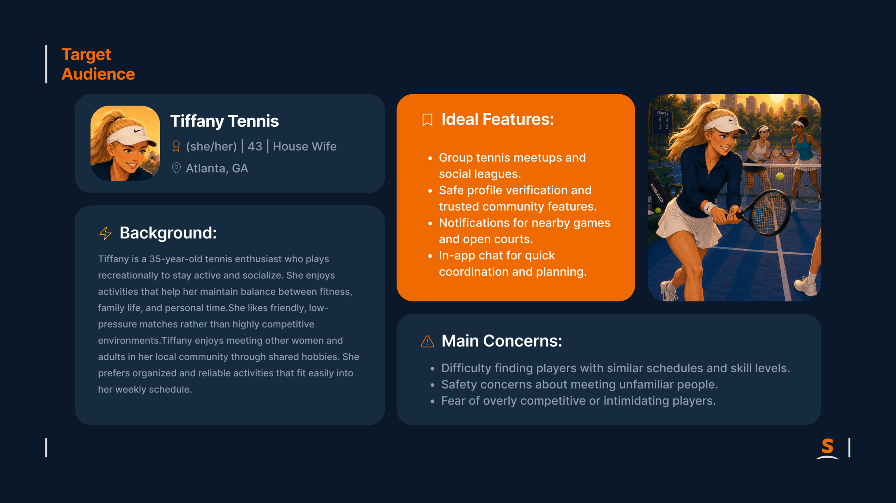
5b · Final solution
01
Home / Discover
Nearby games and the people in them, list and map.
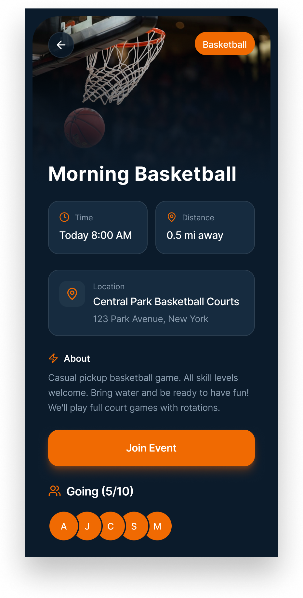
02
Event Detail
The decision surface: what, where, when, who, before you commit.
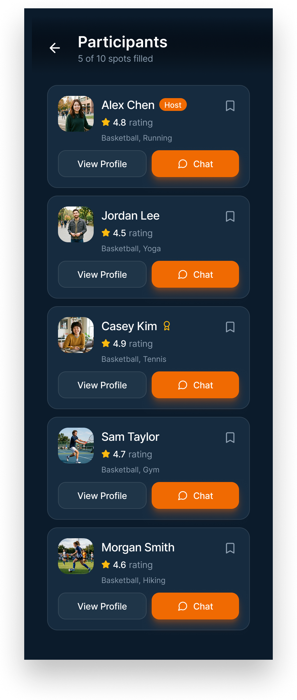
03
Participants
Who you'd be meeting: the trust surface.
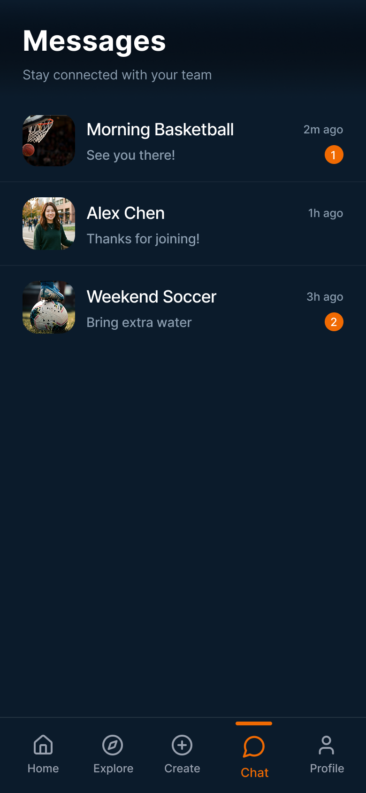
04
Chat
The connection layer that turns "an event" into "see you there."
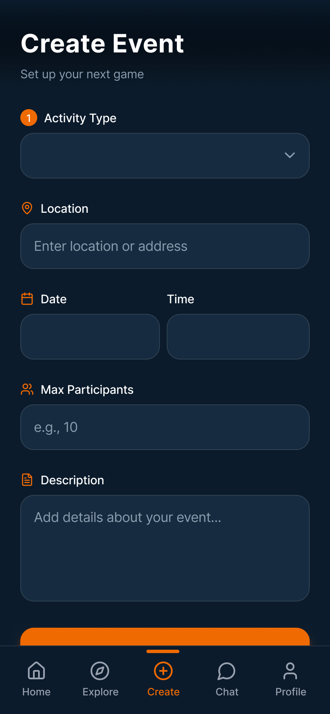
05
Event Creation
Designed so a first-time host sees a few fields, not a form to dread.
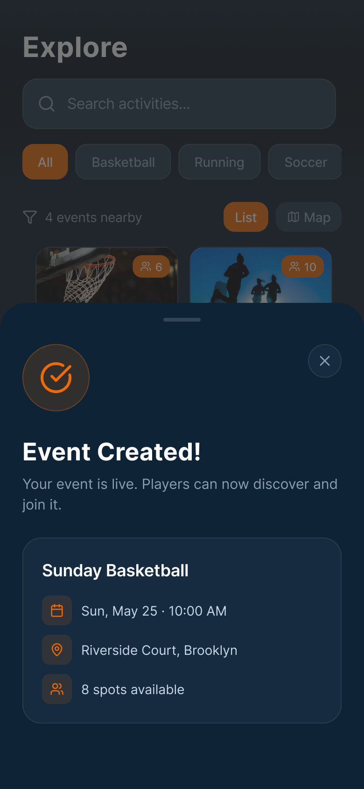
06
Event Created
The loop closes: your event is live and discoverable.
Outcome
A first round of user testing ran at midterm, with one participant. The clearest thing it surfaced was in the event flow: after tapping to join, testers weren't sure the action had registered. An earlier confirmation state read as too quiet to trust. The fix was to make "joined" unmistakable: a clear Joined state that unlocks Participants and Chat, so the app confirms the commitment instead of leaving the user to guess whether it worked. The pair below shows that fix in place: the screen before the tap, and the unmistakable state after it.
The final critique praised the app itself and the features it shipped with.
[Kelly: worth naming which features the critique actually singled out, if you remember — that's a stronger sentence than the general one above. Also still open: was there a second testing round between midterm and final, and if so what came out of it? And if the actual too-quiet confirmation screen still exists in Figma's version history, export it as scrim-event-joined-before.png and I'll swap it in here for a true before/after of the fix itself; right now this pair shows pre-tap → post-tap of the current design, not the original broken state.]
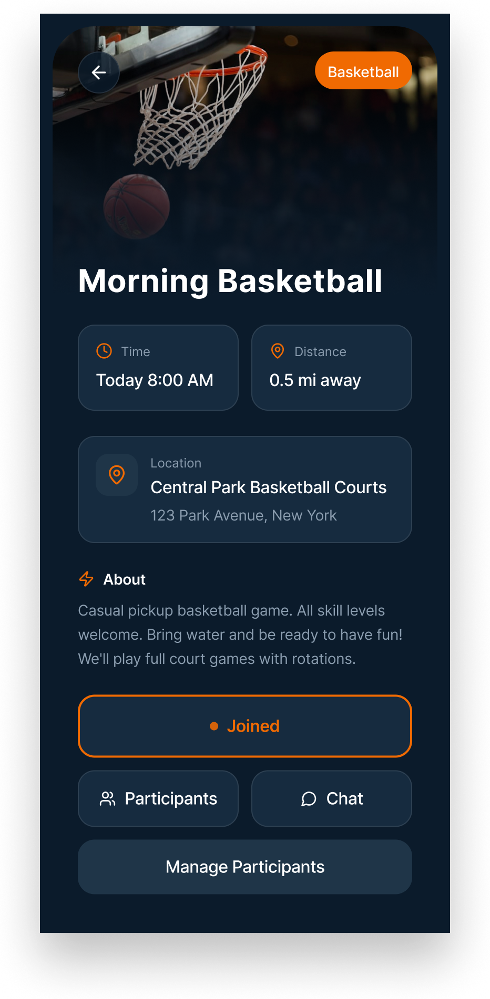
Reflection
What worked well. The feature-to-function fit. Social-activity apps fail in one of two predictable ways: cram every adjacent feature in and lose focus, or strip it down to a feed and lose the use cases. Scrim landed in between. Every screen does the thing the user came for, and nothing exists just to be there.
What was hardest. Designing the event-creation page. The information has to be captured, what, where, when, what skill level, what kind of vibe, and matching breaks without it. But the moment a user taps "create event" and sees a form, they close it. So the question wasn't what to ask; it was how to ask it without it reading as a form. That's the screen I'd pull off the wall and rework first.
What I'd do differently. Push the surface area further. The current Scrim handles activities and the people who go to them, but two adjacent moves would round it out: one-day lessons (try the activity before committing to it), and registering as an instructor, so a skilled user like Stuart isn't just a participant but a host with credibility. The second one isn't really a feature. It's a different way the platform earns its keep, and the version of Scrim I'd build next is one that designs through it.